{kind=link}
{kind=link}
{kind=link}
{kind=link}
{kind=link}


Dornier Do-335B-2 Pfeil
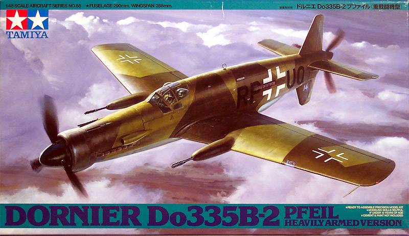
Kit # 61088
MSRP $45.00
Images and text Copyright � 2004 by Matt Swan
Developmental History
The Do-335 was one of a small group of aircraft marking the pinnacle of international piston-engined development. As World War Two drew to a close in Europe this powerful new twin- engined fighter was preparing to enter service with the Luftwaffe. The aircraft was a bold attempt to embody the centerline thrust concept in a practical and efficient airframe. Its unique layout featured a conventional nose mounted engine and tractor airscrew, together with a second engine located in the rear fuselage, driving a pusher propeller situated aft of the tail unit. Aside from its unusual engine layout, the design incorporated several other unusual features. These included a reversible-pitch tractor airscrew, to shorten the rather long landing run; a wing leading edge de-icing system; hydraulically operated flaps, a tunnel radiator for the rear engine and a compressed air powered ejection seat.
The origins of the Do 335 trace back to World War 1 when Claudius Dornier designed a number of flying boats featuring tandem engines. The same system was also used on the very successful post-war Wal and Do 18. Claudius Dornier patented this unconventional layout of the Do-335 with one engine �pulling� in the nose and another �pushing� in the tail in 1937. There are many advantages to the tandem layout over the more traditional system of placing one engine on each wing. You have a twin-engine layout with the frontal area of a single engine design, allowing for higher speeds. It also keeps the weight near the centerline, so the plane can roll faster than a traditional twin. In addition an engine failure doesn't lead to asymmetric thrust, and even in normal flight there is no net torque so the plane is easier to handle.
In 1942 Dornier submitted the P.231 design in response to a Technische Amt requirement for a single seat high-speed bomber. The Dornier proposal was selected as the winner after beating rival designs from Arado and Junkers. Despite official resistance to the unconventional layout, a development contract was awarded by the RLM. Fitted with Daimler-Benz DB603A-2 engines delivering 1750 hp at take-off, the first example of the Do 335 flew for the first time on 26 October 1943 from Mengen, Wurttemburg, with Flugkapitan Hans Dieterle at the controls. After several test flights pilots were generally enthusiastic. They commented favorably on its general handling behavior, maneuverability and in particular on its acceleration and turning circle. However, they also criticized the very poor rearward vision and weak undercarriage and some slight porpoising at high speeds. However, the aircraft demanded of its pilot supreme flying technique, especially during take-off and landing when the cross-shaped tail and rear propeller frequently collided with the runway.
In late 1944, the Do 335A-1 superseded the A-0 on the production line with upgraded DB603E-1 engines and two under-wing hard points for additional bombs or drop tanks. Delivery commenced in January 1945. As the war situation continued to deteriorate, development effort switched from the A-series fighter-bomber to the more heavily armed B-series heavy fighter. The Do 335 V13 was the prototype of the Do 335B-1 which featured a revised nose undercarriage arrangement - the larger wheel being tilted at 45 degrees when fully retracted, a V-shaped armored windscreen and DB603E engines. It's weapons bay was replaced by an additional fuel tank, and the two 15 mm MG151 cannon in the nose replaced by 20 mm MG151s. The B-4 prototype, Do 335 V14 had this armament supplemented by two 30 mm MK103 cannon mounted on the inner wing leading edges. Only the two B-series prototypes were actually completed and flown.
When the US Army overran the Oberpfaffenhofen factory in late April 1945, only 11 Do 335A-1 single seat fighter-bombers and two Do 335A-12 conversion trainers had been completed. A further nine A-1's, four A-4's and two A- 12's were in final assembly, and components and assemblies for nearly 70 more had been completed. Two of the surviving A-0 single seaters were put aboard the US aircraft carrier 'Reaper' and shipped back to the USA for detailed evaluation by the US Navy. The two airworthy A-12 two seaters were flown to Britain via Cherbough, France and flight tested at RAE Farnborough. After checkout, they were flown from a grass runway at Oberweisenfeld, near Munich, to Cherbourg. During this flight, the Do-335s easily outclimbed and outdistanced two escorting P-51s, beating them to Cherbourg by 45 minutes. Both were destroyed in crashes during evaluation by the British. The two B-series prototypes were evaluated by the CEV in France. Do335M-14, W.Nr.230014, the second example of the B-2 Zerstorer, was taken to France by road and after reconditioning was test flown a number of times. It was eventually scrapped in March 1949.
The unique configuration of this aircraft conferred on it a phenomenal performance, which completely eclipsed all of its contemporaries. Technically innovative, heavily armed and possessing a performance which no other piston-engined aircraft has ever achieved or surpassed, the Do 335 possessed great potential as a combat aircraft, but never got the chance to prove itself. Delayed by high-ranking indecision and Allied bombing raids, it simply ran out of time. Today, the sole remaining example of this unique type is on display at the National Air and Space Museum in Washington DC.
The Kit
This is another one of those excellent Tamiya kits chock full of parts and heavy on detail, just perfect for a long winter of modeling. While it is obvious that Tamiya engineers used the majority of the old �A� model molds for the 335A kit that they produced several years earlier this is more than just adding wing-mounted cannons. This kit includes a modified nose gear, a blown canopy, replacement main gear doors and the wing-mounted cannons. It also includes a plug for the centerline-mounted cannon, which was not present on the V14 aircraft. There is only one thing missing from this package and that is a set of wing extensions to make a V13 aircraft. Just like the previous �A� model this one includes some of the basic pieces (not all) to make an �Anteater� trainer and includes both pilots. This does give you several pieces that will end up in the spares box but at least you get to add another pilot figure to the collection. And like the �A� model this kit includes a nice, solid nose weight to keep it from being a tail sitter � a serious concern with this model aircraft.
Inside this box are several plastic bags protecting all the trees of parts. As is typical with Tamiya kits all these parts display crisply engraved panel lines and rivet details. There is virtually no flash on any of the parts. There are plenty of injector pin markings but the majority of these are in unobtrusive areas, the only ones that will need to be worked on are those on the inner sides of the landing gear doors and maybe a few inside the bomb bay. The plastic quality is everything we have come to expect from Tamiya � medium gray and not too brittle or too soft. On the clear parts sprue we get the blown canopy and armored front plate for the �B� model as well as the standard �A� model clear pars. Also included here are the reflector gun sight, landing light lens and a formation light. The sprue gates are of a normal size and present little trouble when removing the parts. The parts fit is very good � I placed the fuselage sides together and put the cover piece for the back seat in place and everything held together just fine like that. I was able to place the main wing spar and the wings onto the fuselage and still the parts held together very well. I test fit the interior floor pan and while it was a little fiddly getting in place it did eventually fit just fine. Previously I have built the �A� model and it required no putty at all during the assembly and that bodes well for this kit.
So lets wrap this up, we have 9 nicely done clear pieces, one large nose weight, two poly bushings for the propellers, and 114 gray injection molded pieces. That gives us a total of 126 pieces but at least 16 of them will not be used. Below are shots of all the gray plastic pieces.
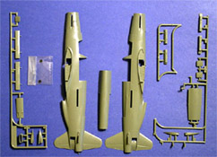
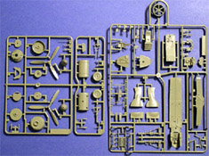
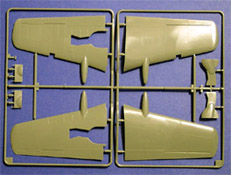
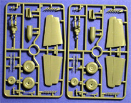
You can click on any of the above images to view larger pictures
Decals and Instructions
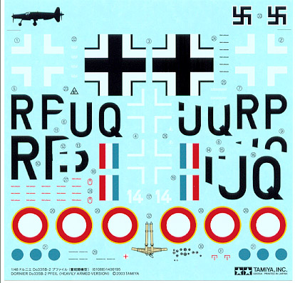
You get a heck of a lot of literature with this model. First there are the basic instructions. This is a large fold-out with ten panels of information, the cover includes a nice historical background in four different languages followed by basic modeling tips and the exploded view construction steps. There are fifteen individual exploded view steps that feature nice, clean illustrations, plenty of color call-outs and some detailed instructions for the more complex steps. Next are two panels of exterior color guide and decal placement guides. Throughout the instructions all colors are referred to by Tamiya color code, not RLM numbers. In the last two panels there are references to RLM numbers for the exterior scheme.
To expand on that exterior color scheme we are given a full sized painting diagram showing the left, right and top of the aircraft. There is yet one more page that discusses the paint scheme and instructions on how to apply decals. Lastly there is a two page fold-out that goes into great detail on some of the more innovative or unusual aspects of the aircraft along with some nicely detailed information on the boarding ladder so if you care to scratch build that item � pay close attention to this literature.
This kit is aimed at allowing you to build the V14 aircraft that was shipped to France, repaired and tested there. The decals supplied allow you to dress this in the Luftwaffe livery with conventional splinter camouflage or to put the French markings on it with an overall green drab coat. The decals are classic modern Tamiya, not too thin and well printed with near perfect print registry. They include not only the national markings but also many service and warning stencils and a set of dash instrument faces as well. And they include the Swastikas for the tail fin!!!
Conclusions
Generally when we get a model kit it will give us options to model one of several different aircraft. This kit is aimed at the V14 aircraft, period. The parts all display the quality of craftsmanship that we have come to expect from Tamiya. Everything displays nice detail and fits well. The directions are clear, concise and in depth. The decals are comprehensive for the two schemes worn by this aircraft and are of good quality. There are a few things you can do to dress this bird up or even make some serious modifications. Whether you choose to build this as an out-of-box project, add some readily available detail packages or really go-to-town with an all-out conversion this kit will make a most interesting addition to anyone�s collection. Me �. I�m looking for one of those old Monogram P-39s to chop up.
Accessories
As I mentioned earlier, I have built the �A� model and I added Aires engines in both the front and the rear and these following pictures are of that aircraft, not the �B� model and I place them here only to show the quality of the Aires detail packages.
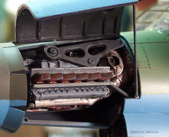 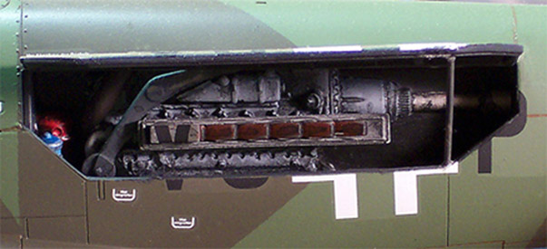
Aires also makes a very nice replacement cockpit for the �A� model which could easily be used on the �B� and has a nicely improved ejection seat. There are a plethora of masks, wheels, engines, canopies and other accessories made for the �A� series that could be converted for use here. 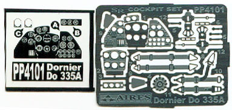 Also of interest, at one time in the past and possible again in the near future Paragon made several extensive conversion sets for the early Monogram kit that included the wing extensions and back seat sets for the proposed later �B� models. These require a bit of work to graph onto the Tamiya kit but if you can find one it will make for a very unusual build. One modeler went so far as to salvage wing panels from a Monogram P-39 to make a wing extension on a Tamiya kit with excellent results. To the right and below left are images of the Aires cockpit set ($14.99 MSRP). Note the exceptional detail on the backside of the dash and inside the cockpit tub. This set also features a cool little set of PE and the acetate instrument panel. Below and to the right are the Ultracast replacement exhaust manifolds ($7.95 MSRP). Both of these detail packages offer finely detailed pieces and will definitely improve the look of your model. An additional benefit of the Aires package is that should you decide to build one of the proposed future aircraft like the B-8 you can use the original kit cockpit pieces to furnish the rear pit.
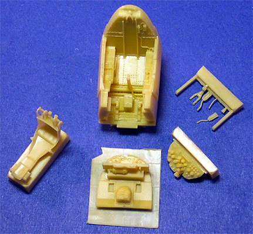 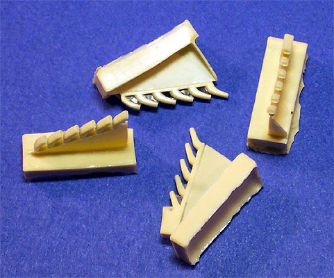